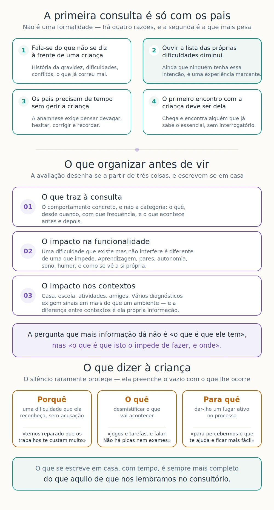

Preparar a ida à consulta de psicologia
A primeira consulta é habitualmente só com os pais. Não é uma formalidade nem uma triagem administrativa: é onde se define o que vai ser avaliado, e é a consulta que mais determina a utilidade de tudo o que vem depois.
A situação
A decisão de marcar demora, quase sempre, mais tempo do que devia. Meses de dúvida, conselhos contraditórios de familiares, a esperança de que passe com a idade. Quando finalmente se marca, é frequente que a família chegue com uma preocupação difusa — «não sei bem explicar, mas alguma coisa não está bem» — e saia da primeira consulta com a sensação de não ter dito metade do que queria.
Isso tem consequências: uma avaliação desenhada a partir de informação incompleta responde a perguntas que não eram bem as certas. Vale a pena chegar preparado.
O que se sabe
A primeira consulta é com os pais, e há razões para isso
Costuma surpreender, e por vezes desapontar: marcou-se consulta para a criança, e a criança não vai. Mas esta primeira sessão — a anamnese — tem exigências que a presença da criança inviabilizaria.
Fala-se de coisas que não se dizem à frente de uma criança. A história da gravidez e do parto, dificuldades de desenvolvimento, preocupações sobre o futuro, conflitos entre os adultos, doença ou sofrimento na família, o que já correu mal e o que já se tentou. Nada disto pode ser dito com sinceridade com o próprio sentado ao lado — e a sinceridade é aqui condição de trabalho.
Uma criança que ouve os pais enumerarem o que ela não consegue fazer sai dali diminuída. Ainda que ninguém tenha essa intenção, ouvir uma lista das próprias dificuldades ditas por quem mais admira é uma experiência marcante — e começa a relação clínica exatamente pelo lugar errado.
Os pais precisam de tempo sem gerir a criança. Com o filho presente, metade da atenção vai para o que ele está a fazer. A anamnese exige que se possa pensar devagar, hesitar, corrigir e recordar.
E o primeiro encontro com a criança deve ser dela. Quando ela chega, na consulta seguinte, encontra alguém que já sabe o essencial e que a pode receber sem interrogatório — com tempo para conhecer o que ela gosta, o que faz bem, e como vê a sua própria situação.
Quando faz sentido a criança estar presente desde o início
A regra não é absoluta, e há situações em que o próprio deve ser incluído mais cedo:
- Adolescentes e jovens adultos. A partir dos catorze ou quinze anos, é frequentemente o próprio quem deve ser ouvido primeiro. Convocar os pais sem ele, nessa idade, transmite uma mensagem errada sobre de quem é o processo.
- Quando foi o próprio a pedir ajuda. Nesse caso, excluí-lo do primeiro contacto contraria a iniciativa que teve.
- Quando há desacordo entre os adultos sobre o motivo da consulta, e a versão da criança é necessária para perceber o que está em causa.
- Situações de urgência clínica, em que a avaliação do estado da criança não pode esperar por uma sessão preliminar.
Mesmo nestes casos, costuma haver um tempo separado com os pais e um tempo separado com o próprio. O que não se faz é a conversa toda em conjunto.

O que é preciso saber antes de decidir o que avaliar
A avaliação não se desenha a partir de um sintoma isolado. Desenha-se a partir de três coisas, e é por isso que vale a pena organizá-las antes de vir:
O que traz a família à consulta. Não a categoria — «acho que tem défice de atenção» — mas o comportamento concreto que se observa, quando começou, com que frequência acontece, e o que costuma acontecer antes e depois.
O impacto na funcionalidade da criança. Uma dificuldade que existe mas não interfere é diferente de uma que impede. Interessa saber em que medida afeta a aprendizagem, as relações com os pares, a autonomia no dia a dia, o sono, a alimentação, o humor e a forma como a criança se vê a si própria.
O impacto nos vários contextos. Em casa, na escola, nas atividades, com a família alargada, com os amigos. Este ponto é decisivo por uma razão técnica: vários diagnósticos exigem que os sinais estejam presentes em mais do que um ambiente, e uma dificuldade que só existe num contexto aponta para algo diferente de uma que aparece em todos.
A pergunta que mais informação dá não é «o que é que ele tem», mas «o que é que isto o impede de fazer, e onde».
O que se combina antes de avaliar
Da primeira consulta deve sair um plano, e esse plano deve ser explícito: que áreas vão ser avaliadas, com que instrumentos, com que finalidade, e uma estimativa do número de consultas previstas — incluindo a sessão de devolução, que faz parte do processo e não é um extra a pedir depois.
Os pais autorizam esse plano, e devem saber ao que estão a dizer que sim. Se alguma coisa não estiver clara, é para perguntar antes de começar.
Acontece com frequência que, já em consulta, se observe algo que não constava do motivo inicial — um sinal de ansiedade num processo que começou por dificuldades de aprendizagem, por exemplo. Nesse caso, o alargamento do estudo é proposto e não assumido: explica-se o que se observou, o que se propõe acrescentar, quantas sessões mais implica, e a família decide se quer avançar. Pode não querer, e é uma decisão legítima — a avaliação limitar-se-á então às questões acordadas.
O que dizer à criança
É a pergunta que quase todos os pais fazem, e a que costuma gerar mais desconforto. A tentação é não dizer nada, ou inventar outro motivo para a saída de casa.
O silêncio raramente protege. A criança percebe que se fala dela em voz baixa, que houve uma ida sem ela, que alguma coisa mudou. Sem explicação, preenche o vazio com o que lhe ocorre — e o que lhe ocorre costuma ser pior do que a realidade: que fez alguma coisa de mal, que tem uma doença grave, que os pais estão a pensar em pô-la noutro sítio.
O que costuma funcionar é uma explicação curta, verdadeira e ajustada à idade. Três elementos chegam:
- Porquê — nomeando uma dificuldade que a criança reconheça e não sinta como acusação: «temos reparado que os trabalhos de casa te custam muito e que isso te deixa aborrecido».
- O quê — desmistificando o que vai acontecer: «vamos falar com uma psicóloga, que trabalha com crianças e percebe destas coisas. Vais fazer jogos e tarefas, e falar com ela. Não há picas nem exames».
- Para quê — dando-lhe um lugar ativo: «serve para percebermos melhor o que te ajuda, para as coisas ficarem mais fáceis».
Duas coisas a evitar: apresentar a consulta como castigo ou consequência do comportamento, e prometer que é só uma vez quando não se sabe se será. Com adolescentes, acrescenta-se o que é próprio da idade — que terão tempo a sós com a psicóloga, e que o que ali disserem tem reserva, com os limites que lhes serão explicados na primeira sessão.
O que fazer
Escrever antes de vir. É o conselho mais simples e o de maior efeito. Sentar-se com meia hora, sozinho ou com o outro cuidador, e escrever o que preocupa. O que se escreve em casa é sempre mais completo do que o que se lembra no consultório.
Trazer exemplos concretos e datados. «Na terça-feira demorou duas horas a fazer uma ficha de dez perguntas» diz muito mais do que «não se concentra».
Virem os dois, se possível. Cada cuidador observa coisas diferentes e recorda coisas diferentes. Quando não é possível, vale a pena que quem não vem escreva o que considera importante. Em famílias separadas, a informação de ambas as casas é particularmente útil — e a diferença entre elas é ela própria informação.
Reunir o que já existe. Relatórios anteriores, avaliações de outros técnicos, informação da escola, registos de saúde relevantes. Evita repetir o que já foi feito.
Falar com a escola antes. Perguntar ao diretor de turma ou ao professor titular o que observam, com exemplos. Muitas vezes a descrição da escola difere da de casa, e essa diferença é das informações mais úteis que se pode trazer.
Escrever também o que corre bem. As competências, os interesses, o que a criança faz com gosto. Não é cortesia: uma avaliação que não conhece os pontos fortes não sabe sobre o que construir as recomendações.
Preparar a conversa com a criança, e tê-la antes. Não à porta do consultório. Um ou dois dias antes, com tempo para ela fazer perguntas.
Quando não vale a pena adiar
Há situações em que a dúvida sobre o momento certo custa mais do que a consulta:
- A dificuldade mantém-se há vários meses e não melhora com os ajustes já feitos em casa e na escola.
- A criança verbaliza sofrimento, desânimo em relação a si própria, ou recusa persistente em ir à escola.
- Há uma diferença acentuada entre o esforço que faz e os resultados que obtém.
- A escola sinaliza preocupação, ainda que em casa a situação pareça controlada — ou o inverso.
- O funcionamento da família está organizado à volta da dificuldade, com desgaste evidente.
- Existe história familiar de dificuldades semelhantes, e há sinais precoces.
Avaliar não é rotular. Em muitos casos a conclusão é tranquilizadora, e ficar a saber que não há motivo de preocupação tem valor próprio — poupa meses de dúvida e permite que a energia da família vá para outro lado.
Preparar a primeira consulta
Duas páginas para organizar, antes de vir, o que traz à consulta, o impacto na funcionalidade e nos vários contextos, o que já foi tentado, e o que corre bem.
Sobre o que acontece depois — a sessão de devolução, e como se lê o documento que dela resulta — há um texto próprio: A devolução dos resultados e como ler um relatório.
Este texto tem fins informativos e não substitui avaliação nem acompanhamento profissional. Cada situação exige uma leitura própria.
Referências
- American Educational Research Association, American Psychological Association, & National Council on Measurement in Education. (2014). Standards for educational and psychological testing. American Educational Research Association.
- American Psychiatric Association. (2022). Diagnostic and statistical manual of mental disorders (5.ª ed., texto revisto). https://doi.org/10.1176/appi.books.9780890425787
- Ordem dos Psicólogos Portugueses. (2016). Código Deontológico da Ordem dos Psicólogos Portugueses.